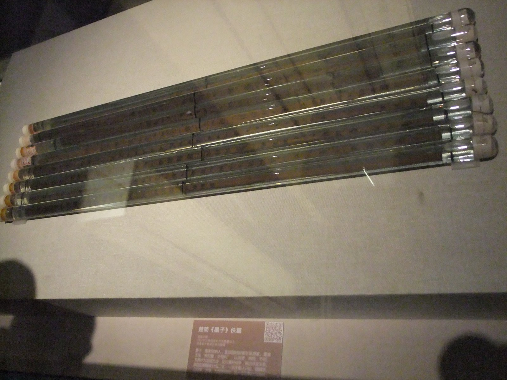

[250년 미국이야기①] 역사의 저울로 미국 250년을 잰다
사기·투키디데스·이븐 할둔, 지나간 흥망에서 이치를 캔 동서의 역사가들
임금·집값·의료비·해군·동맹, 건국 250년 미국이 흔들리는 장면들
거두는 기능과 되돌려주는 기능의 균형, 경세제민의 저울로 미국을 읽는다
AI경제저널=김갑봉 기자 | 우리는 왜 지금도 사기를 읽고 삼국지를 읽고 초한전을 읽는가. 2000여년 전 중국 땅에서 벌어진 흥망이 오늘 우리와 무슨 상관인가. 이 연재는 그 물음에서 시작한다.
사마천이 캔 흥망의 이치
사마천은 궁형을 당하고도 붓을 놓지 않았고, 제 글이 지나간 일의 기록에 그친다고 여기지 않았다. "하늘과 사람의 경계를 밝히고, 옛날과 지금의 변화를 꿰뚫어, 한 집안의 말을 이룬다."
사마천이 벗 임안에게 보낸 편지에 남긴 세 구절이다. 흐름과 선택을 가르는 일, 옛날에서 지금까지 바뀌어 온 길을 꿰는 일, 남의 말을 옮기지 않고 자기 잣대로 재는 일을 뜻한다.
그는 같은 편지에서 성패와 흥망의 이치를 캤다(稽其成敗興壞之理)고도 썼다. 역사를 쓰는 까닭이 이 몇 마디에 다 들어 있다.
역사에서 이치를 캐려 한 것은 사마천만이 아니다. 사마천보다 300년쯤 앞서 그리스의 투키디데스는 사람의 일이 흘러가는 이치대로라면 앞일도 지난 일을 닮으리라며, 제 기록을 한때의 읽을거리가 아니라 영원한 자산으로 쓴다고 했다. 사마천보다 1000년 남짓 뒤 사마광은 지난 시대의 흥망을 거울로 삼고 오늘의 득실을 살피라며 자치통감을 엮었다.
이슬람 세계의 이븐 할둔은 왕조의 수명이 대개 세 세대를 넘지 못한다며 일어나고 스러지는 순환의 법칙을 찾았다. 그는 집단연대의식, 곧 아사비야를 열쇠로 삼아 인류 문명이 흥망성쇠의 부침과 순환을 겪는다고 보았다(최성철, 2021).
최성철은 그를 문화형태학적, 비교문명론적 역사철학의 원조로 꼽았다(최성철, 2021). 동과 서가 다르고 시대가 달라도, 지나간 것에서 이치를 캐 오늘을 비춘다는 뜻은 하나였다.
사마천은 태사공자서에서 사기가 모두 130편에 52만6500자라고 스스로 밝혔다. 그는 130편을 본기 12편, 표 10편, 서 8편, 세가 30편, 열전 70편으로 짰고, 그 가운데 100편이 제후와 인물의 이야기인 세가와 열전이다. 필자는 이 짜임에서 역사를 끄는 것이 하늘의 뜻이 아니라 사람의 선택이라는 뜻을 읽는다.

열전의 첫 편인 백이열전은 천하를 얻은 자가 아니라 지조를 지키다 굶어 죽은 두 사람을 첫머리에 세웠다. 필자는 이것을 이기고 지는 것 너머의 잣대가 있다는 선언으로 읽는다.
사마천은 대개 사실을 다 적은 뒤 「태사공왈」로 붓을 바꿔 제 판단을 짧게 붙였다. 필자는 사실과 판단을 가른 이 규율을 사기가 2000년 넘게 읽혀 온 힘의 하나로 본다.
역사는 현재와 과거의 끊임없는 대화라고 영국 역사가 에드워드 카는 1961년 케임브리지대학교 강연에서 말했다. 지나간 일이 저 혼자 뜻을 갖는 것이 아니라, 오늘의 물음이 어제를 다시 살아나게 한다.
무대만 커졌을 뿐 극의 구조는 같다
초한전의 홍문연 장면이 그렇다. 칼춤 아래에서 천하의 향방이 갈리는 그 저녁을 우리가 지금도 읽는 것은, 결정적 순간에 결단하지 못한 자의 값을 그 장면이 생생하게 보여주기 때문이다.
우리가 초한전을 읽는 것은 항우와 유방이 궁금해서가 아니다. 일흔 번 넘게 싸워 진 적이 없다던 항우는 마지막 싸움에서 졌고, 자주 지던 유방은 마지막에 이겼다.
항우는 끝까지 하늘이 나를 망하게 한 것이지 싸움을 잘못한 죄가 아니라고 했고, 유방은 장량과 소하와 한신을 꼽으며 사람을 쓸 줄 안 것이 이긴 까닭이라 했다. 힘만 믿는 자가 어떻게 지고 사람을 얻는 자가 어떻게 이기는지, 그 이치를 오늘의 눈으로 다시 보려고 우리는 그 책을 편다.
삼국지도 위와 촉과 오가 그리워서 읽는 것이 아니다. 셋으로 갈라진 천하에서 저마다 어떤 수를 두는지, 이긴 수는 왜 이겼고 진 수는 어디서 어긋났는지를 보려는 것이다. 동맹은 맺어졌다가 깨지고 어제의 적이 오늘 한편이 되는데, 그 극의 구조가 낯설지 않은 것은 지금 세계가 그렇게 돌아가기 때문이다.
사마천의 천하는 중원과 그 변경, 흉노와 대완과 조선까지였고, 사기에는 조선열전도 있다. 그 무대가 16세기부터 지구 전체로 넓어졌다.
스페인과 네덜란드가 바다를 놓고 겨뤘고, 영국이 해가 지지 않는 제국을 세웠고, 두 차례 세계대전이 끝난 자리에서 미국과 소련이 갈라섰다. 춘추5패와 전국7웅의 자리에 오늘의 패권국들이 섰다. 무대만 커졌을 뿐 극의 구조는 같다는 것이 이 연재의 독법이다.
흔들리는 미국, 어느 쪽에도 서지 않는다
오늘 그 무대의 한가운데에 선 나라가 1776년 독립선언으로 태어나 2026년 건국 250년을 맞은 미국이다. 세계대전을 거치며 패권국으로 섰고, 냉전기에도 강대국이었으며, 소련이 무너진 뒤로는 맞수가 없었다. 그런데 지금 그 나라가 흔들린다.
안을 보면 임금이 생산성만큼 오르지 못했고(1979~2020년), 집값은 중위소득의 다섯 배(2024년)에 이르렀다. 세계에서 가장 비싼 의료비를 쓰는 나라에서 사람들이 고소득 선진국 가운데 가장 일찍 죽는 축에 든다.
밖을 보면 전투함 척수에서 중국 해군이 미 해군을 앞질렀고, 대만해협 전쟁이 나면 장거리 정밀유도무기 일부가 1주 안에 바닥날 수 있다는 경고가 나왔다. 동맹은 각자도생을 말하고 뒷마당은 등을 돌린다. 이 연재가 그 장면들을 한 편씩 짚는다.
이 대목에서 두 갈래 이야기가 쏟아진다. 한쪽은 미국이 끝났다고 말하고, 다른 쪽은 미국이 늘 위기를 말해왔고 늘 살아났다고 말한다. 이 연재는 어느 쪽에도 서지 않고, 미국을 미워하지도 편들지도 않는다.
우리에게는 그렇게 볼 자리가 있다. 제국의 흥망은 이 땅에서 낯선 일이 아니다. 우리는 한나라와 당나라를 보았고 원나라와 명나라와 청나라를 보았으며, 그 곁에서 수천 년을 살아남아 오늘에 이르렀다.
그 눈으로 보면 미국의 250년은 특별한 예외가 아니라 되풀이되는 이치의 한 판이다. 미국이 마주 선 상대들도 그렇다. 이란은 페르시아 제국의 후예이고 중국은 수천 년 문명의 계승자로, 둘 다 미국보다 훨씬 오랜 시간을 살아냈다.
필자는 250년의 힘으로 밀어붙일 수는 있어도 수천 년의 기억을 지울 수는 없다고 본다. 이 자리는 자랑이 아니라 책임이다. 오래 살아남은 눈은 남의 흥망을 구경하는 눈이 아니라 흥망의 값을 아는 눈이다.
우리는 제국이 무너질 때 그 곁의 나라들이 무엇을 겪는지 안다. 명나라와 청나라가 갈릴 때 이 땅이 전장이 됐고, 청나라와 일본이 갈릴 때도 그랬다. 패권이 바뀌는 시대를 읽는 일은 우리에게 교양이 아니라 생존의 기술이었다.
그래서 이 연재는 미국 진단서가 아니라 당대의 흥망사이고, 미국이라는 창으로 시대를 읽는 통사다. 뒤로는 옛 고전과 다시 마주하고 앞으로는 다가올 시대와 대화한다.
시대를 재는 자 열 개
영국은 왜 세계의 공장 자리를 내주고도 반세기를 더 버텼고, 미국은 왜 같은 길을 더 오래 걷고 있는가. 석탄에서 석유로 넘어가던 길목에서 벌어진 일이, 석유에서 전기로 넘어가는 지금 되풀이되는가. 미국의 물음이면서 시대의 물음이다.
이 연재는 시대를 재는 자 열 개를 쓰고, 그 가운데 앞의 다섯은 문명의 자다. 생산양식이 어떻게 바뀌어 왔는지, 에너지가 인력과 가축에서 석탄과 석유를 지나 전기로 어떻게 옮겨가는지를 잰다.
산업혁명이 몇 번째 고비를 넘는지, 사회가 농경에서 산업과 지식정보를 지나 인공지능의 단계로 어떻게 넘어가는지도 잰다. 국제질서가 세계대전과 냉전과 탈냉전을 지나 어디로 가는지도 여기에 든다.
뒤의 다섯인 패권의 자는 패권이 어떤 이치로 교대해 왔는지, 중국과 중견국이 어떻게 올라서는지, 달러의 질서가 어떻게 변하는지를 잰다. 미국조차 통제하지 못하는 세계 체제란 무엇인지, 전쟁의 양식이 어떻게 바뀌는지가 나머지 두 자다.
이 연재 2편에서 그 가운데 다섯 축을 골라 표로 겹쳐 세운다. 다섯 축을 겹치면 여러 곡선이 지금 한자리에서 함께 꺾이는 것이 보인다.
이 연재는 안에서 밖으로 나간다. 공장에서 시작해 살림과 제도와 마음을 지나, 달러와 군대와 기술을 거쳐, 나뉘는 세계와 합치는 세계에 이른다.
안이 밖을 만들고 밖이 다시 안을 조인다는 것이 이 순서의 논리다. 어느 편을 먼저 펴도 읽히게 썼지만, 차례대로 읽으면 하나의 곡선이 보일 것이다.
왜 하필 지금 쓰는가 하는 물음이 하나 남는다. 미국이 250년을 맞는 해라는 것은 계기일 뿐 까닭은 아니다.
까닭은 이 연재 2편에서 보듯 문명의 자 다섯이 한자리에서 함께 꺾이는 시대가 우리 눈앞에서 진행되고 있다는 데 있다. 사마천은 한나라의 전성기에 앉아 지나간 흥망을 썼으나, 우리는 필자가 미국의 상대적 쇠퇴라 부르는 시간의 한복판에서 쓴다. 결말을 모르고 쓰는 흥망사, 그것이 이 연재의 조건이자 긴장이다.
경세제민의 저울, 거두는 힘과 되돌려주는 힘
저울 하나를 더 밝혀 둔다. 세상을 다스리고 사람을 구한다는 경세제민이다. 이 말은 동아시아에서 나왔지만 동아시아만의 것은 아니다.
필자는 국가가 곡물을 거두면서 태어난 순간부터 거두는 기능과 되돌려주는 기능이 어디서나 한 쌍이었다고 본다.
한나라 선제 때 경수창이 건의해 변방 군마다 지은 상평창은 곡식이 흔할 때 값을 올려 사들여 농민을 돕고 귀할 때 값을 내려 풀었다. 나라의 곳간이 곧 흉년의 밑천이었다.
되돌려주는 방식을 잘못 짜면 곳간이 빈다. 18~19세기 청나라는 기근 구호의 일부를 나라 곳곳의 지방 곡물창고로 꾸렸다. 중앙정부의 재난 구호를 자주 받은 성일수록 창고 비축이 체계적으로 적었고, 중앙 구호가 지방의 대비를 밀어냈다(슈, 2004).
서양에서는 애덤 스미스가 비슷한 두 축을 세웠다. 1776년 국부론 제4편 머리에서 그는 정치경제학의 목적을 둘로 꼽았다. 인민이 넉넉한 소득과 생계를 스스로 마련하게 하는 일, 그리고 국가에 공공 업무를 꾸릴 세입을 대는 일이다. 필자는 이 두 축을 국가가 거두는 일과 인민의 살림을 받치는 일의 짝으로 읽는다.
거두는 힘은 성장과도 이어진다. 1650~1913년 유럽 11개국을 분석한 연구는 나라 전체의 세제를 하나로 묶은 재정 중앙집권화가 경제성장과 유의하게 이어졌다고 보고했다. 나라가 세금을 더 거둘 수 있게 된 역량이 그 경로 가운데 하나였다(딘체코·카츠, 2016).
거두는 힘이 줄면 나라가 기운다. 1700~1850년 청나라를 다룬 연구는 넓은 나라의 황제가 관리의 수탈을 감시하기 어려워 반란을 막으려면 세금을 낮게 둬야 했다고 보았다.
나라가 크고 인구가 늘수록 관리의 수탈을 감시하기 더 어려워졌고, 실제로 번영하던 18세기 내내 재정 역량이 꾸준히 줄었다. 거둔 것이 위로 가지 못하고 중간에서 샜다(승, 2014).
이 연재가 미국을 재는 저울이 그것이다. 세계에서 가장 부유한 축에 드는 나라가 되돌려주는 일에 실패할 때 무슨 일이 일어나는가. 안에서는 미국인의 살림이, 밖에서는 동맹과 뒷마당이 그 물음의 답안지다.
흥망은 거두는 기능과 되돌려주는 기능의 균형이 무너질 때 온다는 것이 이 연재가 세운 핵심 가설이다. 이것은 확정된 사실이 아니라 필자의 해석이고, 이어지는 연재 각 편이 그 해석을 하나씩 시험한다.
사실을 다루는 방식
이 연재가 사실을 다루는 방식을 밝혀 둔다. 수치는 정부와 국제기구, 연구기관이 낸 1차 자료를 직접 열어 확인하는 것을 원칙으로 했다. 1차 자료가 닿지 않는 사건 경위 일부에만 언론 보도를 쓰고, 그때는 참고문헌에 언론 보도로 따로 밝혔다.
끝내 확인하지 못한 수치는 기사에서 뺐고, 수치마다 기준 시점을 다는 것을 원칙으로 삼았다. 참고문헌 수집과 데이터 판독에는 인공지능 클로드를 활용했고, 구성과 판단과 데스킹은 사람이 했다.
서술의 방식도 사마천의 계보에서 빌렸다. 사마천이 대개 편 끝에 판단을 따로 떼어 둔 규율을 빌려, 이 연재는 사실을 각 편에 두고 판단은 마지막 회에 한 번 모아 적는다.
각 편의 인사이트 문장은 필자의 해석이라고 밝혀 적는다. 연재를 읽는 동안 독자가 제 판단을 세울 수 있게 하려는 것이다.
독자에게 청할 것은 하나다. 미국을 미워하는 눈으로도, 우러르는 눈으로도 읽지 말기 바란다. 미워하는 눈에는 미국의 남은 힘이 안 보이고, 우러르는 눈에는 미국의 빈 곳이 안 보인다.
필자가 반미와 친미 사이 어느 쪽도 아니려 애쓴 것은 태도의 문제가 아니라 정확성의 문제였다. 흥망은 도덕극이 아니라 이치의 전개이기 때문이다.
역사 앞에서 겸손하지 않은 나라는 오래가지 못했다는 것이 필자가 고전에서 읽은 교훈이다. 이 연재가 미국의 250년에서 읽으려는 것은 제국이 되는 법이 아니다. 흥망이 되풀이되는 이치, 그리고 그 이치 속에서 살아남고 이어지는 법이다.
사기를 덮고 나면 항우도 유방도 사라지고 이치만 남듯, 이 연재를 마치고 나면 미국도 하나의 사례로 남을 것이다. 이치는 오래가고 제국은 지나간다.
이 연재 2편에서 다섯 축을 겹친 문명사의 표를 세우고, 3편에서 미국과 유럽과 러시아와 중국의 250년을 나란히 놓는다. 지도를 먼저 펴고 길을 나서는 순서다. 이제 자를 들고 250년을 재러 간다.
(이 연재는 단행본으로 준비 중인 『250년 미국이야기』 원고를 AI경제저널에 맞게 고쳐 싣는다.)
참고문헌
- 사마천(司馬遷), 『사기(史記)』 권7 「항우본기」·권8 「고조본기」·권61 「백이열전」·권110 「흉노열전」·권115 「조선열전」·권123 「대완열전」·권130 「태사공자서」. 위키문헌 중국어판. https://zh.wikisource.org/wiki/史記
- 반고(班固), 『한서(漢書)』 권24상 「식화지 상」·권62 「사마천전」(「보임안서」 수록). 위키문헌 중국어판. https://zh.wikisource.org/wiki/漢書/卷024 ·https://zh.wikisource.org/wiki/漢書/卷062
- 사마광(司馬光), 「진서표(進書表)」, 1084년. 위키문헌 중국어판. https://zh.wikisource.org/wiki/進書表
- 투키디데스(Thucydides), 『The Peloponnesian War』 제1권 22장, 리처드 크롤리 옮김, 1910년. https://www.perseus.tufts.edu/hopper/text?doc=Perseus:text:1999.01.0200:book=1:chapter=22
- 애덤 스미스(Adam Smith), 『An Inquiry into the Nature and Causes of the Wealth of Nations』 제4편 머리말, 1776년. 프로젝트 구텐베르크 3300번. https://www.gutenberg.org/cache/epub/3300/pg3300.txt
- 이븐 할둔(Ibn Khaldūn), 『무깟디마』 제1권 제3장. 위키문헌 아랍어판. https://ar.wikisource.org/wiki/مقدمة_ابن_خلدون/الباب_الثالث_من_الكتاب_الأول_(الدول_العامة_و_الملك_و_الخلافة_و_المراتب_السلطانية)
- 마크 딘체코(Mark Dincecco)·게이브리얼 카츠(Gabriel Katz), "State Capacity and Long-run Economic Performance", 『The Economic Journal』 126권 590호, 189~218쪽, 2016년. DOI 10.1111/ecoj.12161. https://doi.org/10.1111/ecoj.12161
- 캐럴 H. 슈(Carol H. Shiue), "Local Granaries and Central Government Disaster Relief: Moral Hazard and Intergovernmental Finance in Eighteenth- and Nineteenth-Century China", 『The Journal of Economic History』 64권 1호, 100~124쪽, 2004년. DOI 10.1017/S002205070400261X. https://doi.org/10.1017/S002205070400261X
- 투안휘 승(Tuan-Hwee Sng), "Size and dynastic decline: The principal-agent problem in late imperial China, 1700–1850", 『Explorations in Economic History』 54권, 107~127쪽, 2014년. DOI 10.1016/j.eeh.2014.05.002. https://ideas.repec.org/a/eee/exehis/v54y2014icp107-127.html
- 최성철, 「중세 시대 두 세계의 역사철학: 요아킴 피오레와 이븐 할둔」, 『한국사학사학보』 43집, 282~314쪽, 한국사학사학회, 2021년. DOI 10.29186/kjhh.2021.43.283. KCI 등재. https://www.kci.go.kr/kciportal/ci/sereArticleSearch/ciSereArtiView.kci?sereArticleSearchBean.artiId=ART002735607
- 에드워드 H. 카(Edward H. Carr), 『What Is History?』, 런던 맥밀런, 1961년. https://openlibrary.org/books/OL16355661M
- 하버드대 공동주택연구센터(Joint Center for Housing Studies) 블로그 「Housing Perspectives」, 2025년, "Home Prices Surge to Five Times Median Income, Nearing Historic Highs". https://www.jchs.harvard.edu/blog/home-prices-surge-five-times-median-income-nearing-historic-highs
- 경제정책연구소(Economic Policy Institute), "The Productivity–Pay Gap", 2022년 10월 갱신. https://www.epi.org/productivity-pay-gap/
- 세스 G. 존스(Seth G. Jones), "Empty Bins in a Wartime Environment: The Challenge to the U.S. Defense Industrial Base", 전략국제문제연구소(CSIS), 2023년 1월 23일. https://www.csis.org/analysis/empty-bins-wartime-environment-challenge-us-defense-industrial-base
- 하버드대 공동주택연구센터, 『The State of the Nation's Housing 2025』, 2025년 6월 24일. https://www.jchs.harvard.edu/sites/default/files/reports/files/Harvard_JCHS_The_State_of_the_Nations_Housing_2025.pdf
- 무니라 Z. 군자(Munira Z. Gunja) 외, "U.S. Health Care from a Global Perspective, 2026: Expanded Edition", 커먼웰스펀드(Commonwealth Fund), 2026년 5월. https://www.commonwealthfund.org/publications/issue-briefs/2026/may/us-health-care-global-perspective-2026
- 로널드 오러크(Ronald O'Rourke), "China Naval Modernization: Implications for U.S. Navy Capabilities—Background and Issues for Congress", 미 의회조사국(CRS) 보고서 RL33153, 2025년 4월 24일. https://www.everycrsreport.com/reports/RL33153.html
[사진 출처]
- [사진1] 캐럴 M. 하이스미스(Carol M. Highsmith), 2009년 촬영, 미 의회도서관 판화사진부 LC-DIG-highsm-11604, 공공영역. https://commons.wikimedia.org/wiki/File:LOC_Main_Reading_Room_Highsmith.jpg
- [사진2] Huangdan2060, 2018년 2월 4일 촬영, 위키미디어 공용, CC0. https://commons.wikimedia.org/wiki/File:Bamboo_slips_-_Mozi_(Yipian_or_the_Lost_article),_Western_Han_dynasty,_Hunan_Museum.jpg